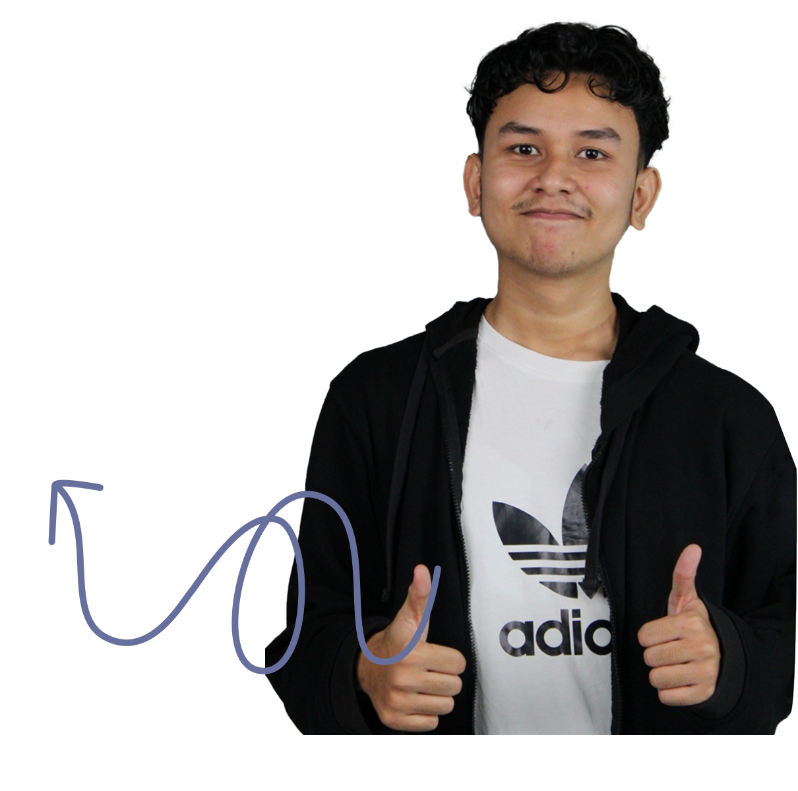

Oh, u wanna know abit bout me ?
Graphic Designer / UI/UX Designer
A Multimedia Engineering student at Batam State Polytechnic with a strong interest in videography, motion graphics, and multimedia design. Outside of creative work, I enjoy playing both grinding and competitive games, which has shaped my persistence, focus, and strategic thinking. I also like learning new things and am currently studying Japanese, with basic reading and speaking ability, along with proficiency in Indonesian and English.
Through both gaming and creative projects, I'm used to staying patient, problem-solving, and continuously improving my skills. I enjoy exploring new tools and ideas, and I'm always open to learning and adapting, whether in multimedia work or personal development.
